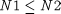
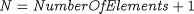
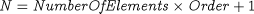

In most applications, Get is applied to individual variables or array elements. However, in some cases, it may be desirable to Get values of an entire array or a slice of an array. The syntax for achieving this is of the form:
GET SIGNALID "SigName" STATUS StatVar gPROMSArrayVariable := "ForeignVariableID"(1:N) ; gPROMSArrayVariable(N1:N2) := "ForeignVariableID"(1:N2-N1+1) ; gPROMSArrayVariable ; gPROMSArrayVariable(N1:N2) ; ... END
The main point to note is that if a foreign variable ID is specified to receive an array of gPROMS variable values, then we must declare this ForeignVariableID as an array of the same length. Thus, in the first case above, to get an entire array of length N, we treat the ForeignVariableID also as an array of length N and show this explicitly by adding the (1:N) "slice'' notation to it.
Similarly, in the second case, to get the values of a slice of the array between indices N1 and N2 inclusive (assuming  ), we treat the ForeignVariableID as an array of the same length(i.e. comprising N2 - N1 + 1 elements).
If entire multi-dimensional arrays or slices thereof are to be received, the ForeignVariableID must be treated as arrays of the same number of dimensions and this must be shown explicitly. For instance:
GET SIGNALID "SigName" STATUSStatVar gPROMSArrayVariable(N1:N2, N3:N4) := "ForeignVariableID" (1:N2-N1+1, 1:N4-N3+1) ; gPROMSArrayVariable(N1:N2, N3:N4) ; ... END
Similar syntax and rules apply for Getting variables that are distributed over one or more continuous domains. However, in such cases, it must be borne in mind that Get can only obtain a discrete representation of the variable:
GET SIGNALID "SigName" STATUSStatVar gPROMSDistributedVariable := "ForeignVariableID"(1:N) ; gPROMSDistributedVariable ; ... END
where N is the number of elements in the discretisation of the distributed variable. This will depend on the discretisation method specified for the corresponding distribution domain, which is normally of the form:
SET DistributionDomain := [ Method, Order, NumberOfElements ] ;
In particular,
for finite-difference based methods (i.e. for Method being BFDM, CFDM, or FFDM), use

Here the values to be received correspond to the values of the distributed variable at N uniformly distributed points (including the domain boundaries).
for orthogonal-collocation based methods (i.e., for Method being OCFEM), use

Here the values to be received correspond to the values of the distributed variable at the (NumberOfElements + 1) finite element boundaries, and at the (Order - 1) collocation points within each finite element.
Getting slices of distributed variables is not recommended as it requires a detailed understanding of the internal representation and handling of variable distributions by gPROMS.